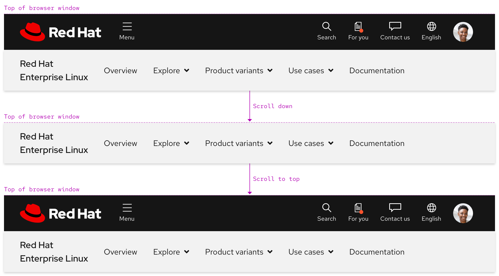

Navigation (secondary)
Usage
Use a secondary navigation to propagate important or related content across a series of pages. Users can better orient themselves if they see content that is organized around a specific topic at the top of a page.
When to use a secondary navigation
A secondary navigation offers a way to propagate content that relates to a specific topic. For example, a secondary navigation can be used on a product page to organize content like use cases, variants, services, documentation, and more. This kind of content cannot live in the primary navigation because it is too specific to a product and it is also too much content in general to add to a single page. In this situation, a secondary navigation is helping content propagate across multiple pages instead of cluttering one page therefore negatively impacting the user experience.
Primary vs. secondary navigation
The primary navigation includes links to the most important pages across a domain. If content related to a specific topic needs to be organized somewhere, it should be added to a secondary navigation instead. This hierarchy can be demonstrated visually by the primary navigation being on top of a secondary navigation when a page loads.

Writing content
Slot 1 text
If a secondary navigation is used on a product page, Slot 1 should display the product name as linked text. When writing content for Slot 1, consider the following:
- If product name text is long, it needs to break to two lines
- If product name text is short and there are fewer links and menus, it can remain on one line
Slot 2 text
Slot 2 includes inline links, menus, and sometimes external links. The order of elements is decided by content strategists. When writing content for Slot 2, consider the following:
- A secondary navigation can become cluttered quickly if there are too many items
- Try to be short and concise when writing
- At least one menu or link should be included, but no more than five total
- Text will expand when translated to some languages
Slot 3 text
Slot 3 is optional, but it can include interactive elements like a call to action. When writing content for Slot 3, consider the following:
- Try to be short and concise when writing
- Including a call to action will reduce the amount of space for Slot 2 elements
- A call to action does not stack to increase the amount of space
- Text will expand when translated to some languages
Maximum uses and character count
If there are fewer links and menus in Slot 2, text labels can be longer. If there are more links and menus, text labels need to be shorter to avoid cluttering.
| Element | Maximum uses | Maximum character count |
|---|---|---|
| Product name text | 1 | 55 |
| Links and menus | 5 (total) | 25 |
| Call to action | 1 | 20 |
Expandable menu
Use the expandable menu to organize content in columns.
Warning
Do not use more than four columns, stack groups below other groups instead like in the examples below.
If content is organized in two columns, they will stretch to fill the empty space.
Expandable menu content
The expandable menu includes content like text, links, calls to action, and more. When adding content to an expandable menu, follow these guidelines:
- Try to be short and concise when writing
- Do not stack lots of links in the same column
- Use only one call to action variant
- Put the most important content in the upper left corner because when content stacks, it will be on top
- Be mindful of how text changes size when translated to some languages
Behavior
Current page indicator
When a user is viewing a page that is part of the secondary navigation information architecture, a red top border is visible. In the example below, a user is viewing both the Overview page and a page within the Product variants menu. External links do not display the red top border (except on hover) because they open links in a new tab or window instead.
Scrolling with primary navigation
A secondary navigation is positioned below the primary navigation when the page loads. When a user scrolls down, the primary navigation disappears and the secondary navigation becomes fixed to the top of the browser window. When a user scrolls back up to the top, the secondary navigation is positioned under the primary navigation again.

Navigating between menus
Only one menu can be expanded at a time and there is no animation when navigating from one menu to the next.
Helpful tip
The default state of the menu caret is pointing down. When a menu is expanded, the caret points up.

Scrolling with menu expanded
If the height of the menu is shorter than the viewport height, content should scroll underneath the backdrop.
If the height of the menu is taller than the viewport height, scroll is trapped within the panel until the menu is collapsed.
Responsive design
As breakpoints get smaller, Slot 2 will collapse into an accordion within a menu instead.
Slot 2 visible

Slot 2 hidden

Breakpoints
| Breakpoint | Range | Slot 2 status | Left and right padding |
|---|---|---|---|
| Desktop, large | > 1680px | Visible | 64px |
| Desktop, medium | 1440px - 1679px | Visible | 64px |
| Desktop, small | 1200px - 1439px | Visible | 32px |
| Tablet, large | 992px - 1199px | Hidden, one menu only | 32px |
| Tablet, small | 768px - 991px | Hidden, one menu only | 32px |
| Mobile, large | 576px - 767px | Hidden, one menu only | 16px |
| Mobile, small | < 575px | Hidden, one menu only | 16px |
Best practices
Incorrect ordering
Do not position the secondary navigation above the primary navigation.
Theme mismatch
Do not use a dark theme secondary navigation in light environments and vice versa.
Content overload
Do not use too many links or menus in Slot 2.
Adding slots
Do not add more slots than provided, three is the maximum.
Slot 1 text
Slot 1 text should never break to three lines.
Missing navigation
At least one link or menu in Slot 2 must be visible.
Related elements or patterns
Feedback
To give feedback about anything on this page, contact us.
Red Hat legal and privacy links
- About Red Hat
- Jobs
- Events
- Locations
- Contact Red Hat
- Red Hat Blog
- Diversity, equity, and inclusion
- Cool Stuff Store
- Red Hat Summit
Red Hat legal and privacy links